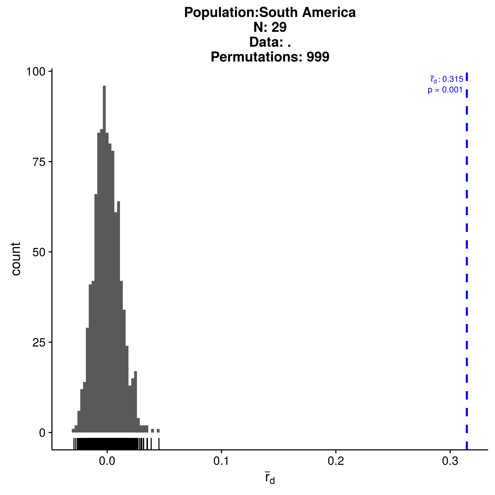
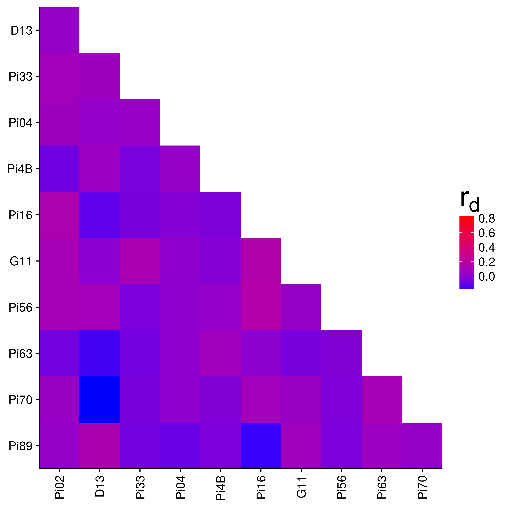

Linkage disequilibrium
NJ Grünwald, ZN Kamvar and SE Everhart
In this chapter we will formally test if populations are in linkage disequilibrium or not. This test is useful to determine if populations are clonal (where significant disequilibrium is expected due to linkage among loci) or sexual (where linkage among loci is not expected). The null hypothesis tested is that alleles observed at different loci are not linked if populations are sexual while alleles recombine freely into new genotypes during the process of sexual reproduction. In molecular ecology we typically use the index of association or related indices to test this phenomenon.
The index of association
The index of association (\(I_A\)) was originally proposed by Brown et al. [@] and implemented in the poppr R package [@] using a permutation approach to assess if loci are linked as described previously by Agapow and Burt [@]. Agapow and Burt also described the index \(\bar{r}_d\) that accounts for the number of loci sampled that is less biased and will be used here. The data we will use in this chapter are populations of Phytophthora infestans from North and South America [@]. We will use the index of association to test the hypothesis that Mexico is the putative origin of P. infestans where populations are expected to be sexual while populations in South America are expected to be clonal.
First, we need to load the packages needed for this analysis.
Next, we will analyze the North American population with the index of association and use 999 permutations of the data in order to give us a p-value. Note that the p-value is calculated with the original observation included.
## |================================================================| 100%
## Ia p.Ia rbarD p.rD
## 0.22260850 0.02000000 0.02395687 0.01700000For advanced users: For reproducibility, use
set.seed()before invokingia().
We observe 48 individuals and see that \(P = 0.017\) for \(\bar{r}_d = 0.024\). We thus reject the null hypothesis of no linkage among markers. Notice, however, that the observed \(\bar{r}_d\) falls on the right tail of the re-sampled distribution and the P value is close to \(P = 0.01\). Could this population have clones? We can find out by displaying the data.
##
## This is a genclone object
## -------------------------
## Genotype information:
##
## 43 multilocus genotypes
## 48 tetraploid individuals
## 11 codominant loci
##
## Population information:
##
## 2 strata - Continent, Country
## 1 populations defined - North AmericaClone correction
Indeed we observe 43 multilocus genotypes out of 48 samples. We are looking at partial clonality and thus need to use clone-corrected (also called clone- censored) data:
## |================================================================| 100%
## Ia p.Ia rbarD p.rD
## 0.079811141 0.204000000 0.008568857 0.194000000Now \(\bar{r}_d\) is located more centrally in the distribution expected from unlinked loci. Note that \(P\) has improved and we fail to reject the null hypothesis of no linkage among markers. Thus it appears that populations in Mexico are sexual.
Next let’s use the same process to evaluate the South American population:
## |================================================================| 100%
## Ia p.Ia rbarD p.rD
## 2.8733344 0.0010000 0.3446431 0.0010000Here we find significant support for the hypothesis that alleles are linked across loci with \(P < 0.001\). The observed \(\bar{r}_d = 0.345\) and falls outside of the distribution expected under no linkage. Let’s look at the clone-corrected data and make sure this is not an artifact of clonality:
## |================================================================| 100%
## Ia p.Ia rbarD p.rD
## 2.6335025 0.0010000 0.3145711 0.0010000Both clone-corrected (\(N = 29\)) and uncorrected data (\(N = 38\)) reject the hypothesis of no linkage among markers. We thus have support for populations in Mexico being sexual while those in South America are clonal.
This approach has been applied to provide support for Mexico as the putative center of origin of the potato late blight pathogen P. infestans [@]. At the center of origin this organism is expected to reproduce sexually, while South American populations are clonal.
Pairwise \(\bar{r}_d\) over all loci
To ensure that the pattern of linkage disequilibrium seen is not due to a single pair of loci, you can calculate \(I_A\) and \(\bar{r}_d\) over all pairs of loci. We’ll perform this on the clone-corrected samples as above.
Pairwise for the Mexican population:
## |================================================================| 100%
Pairwise for the South American population:
## |================================================================| 100%
The heatmaps produced make it look like there is more linkage in the Mexican population! But this is where looks can be deceiving. The color palettes are scaled to the data. We can confirm it by looking at the values:
## Ia rbarD
## Pi02:D13 0.03952145 0.04195430
## Pi02:Pi33 0.05386977 0.09014200
## Pi02:Pi04 0.06845658 0.06944477
## Pi02:Pi4B -0.08388353 -0.08457969
## Pi02:Pi16 0.13698795 0.13710471
## Pi02:G11 0.11013984 0.11014617
## Pi02:Pi56 0.11255045 0.11365168
## Pi02:Pi63 -0.06903465 -0.06918173
## Pi02:Pi70 0.05049544 0.05049764
## Pi02:Pi89 0.03529987 0.03621175## Ia rbarD
## Pi02:D13 0.006586122 0.006730583
## Pi02:Pi33 0.000000000 NaN
## Pi02:Pi04 -0.017633090 -0.017647437
## Pi02:Pi4B 0.288949585 0.301335905
## Pi02:Pi16 0.126278265 0.142859861
## Pi02:G11 0.600576689 0.609929970
## Pi02:Pi56 0.190590008 0.215322486
## Pi02:Pi63 0.673519987 0.684987213
## Pi02:Pi70 0.349111187 0.397116239
## Pi02:Pi89 0.355279336 0.368027168We can see that most of the values from South America are indeed higher than in Mexico. Notice the value that says “NaN” in the South American data? That represents missing data. If you recall from the chapter on Locus Stats, the number of alleles at locus Pi33 for the South American population was 1. If you try to analyze the index of association on a locus with only one allele, you will get an undefined value. This is why the heatmap for the South American population has grey squares in it.
Plotting the output of pair.ia
The output of pair.ia is a matrix that also has a class of “pairia”. It has a specific plot method that we can use to plot the output again and set a standard limit to the plot by specifying a range.
